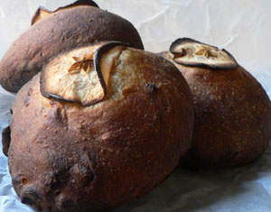
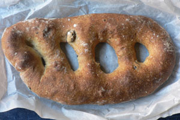
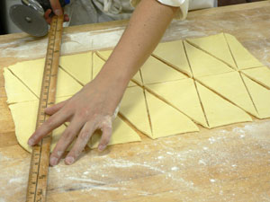
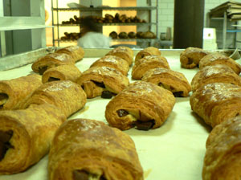

Fourth bread class: hard labor
Fourth bread class: hard labor
In my penultimate bread class, we barely got a moment’s rest. We had the croissants to finish, as well as pains au chocolat, fougasse aux olives, pain normand, and the Belgian brioche specialty, craquelin.
My team was in charge of the Norman bread, which I had eaten and enjoyed before. The people of Normandy are crazy for apples, and judging from the recipes I deal with, they put the fruit in just about everything. This bread, which ends up looking like this:

is made of a few different kinds of flour (some coarse, some fine), apple cider, salt, yeast, and dried apples soaked in calvados. Once it’s fermented and shaped, you brush it with cider, press on a slice of apple, brush it again, and bake it until it’s well browned. It’s wonderful for eating with sharp cheddar cheese and smoky ham, which is exactly what I intend to do with it this weekend. (Incidentally, I’m kind of obsessed with obtaining some calvados, but it’s prohibitively expensive. Do any readers know something about this and want to recommend one before I go splurging?)
Fougasse is an excellent for snacking on, very salty and crusty. I shaped mine like a ladder:

Other students shaped theirs like leaves, and one guy made a smiley face with big ears. You have to make the holes big; all the bread wants to do is close back up because it’s a stubborn jerk of a dough. Making all these big holes results in plenty of exposed surfaces to get crusty and scrumptious.
Making croissants was the big excitement of the day, and by far the hardest thing we’ve done. I didn’t bother with a picture of the finished product, because this is more interesting:

It’s not easy to roll the dough out to exactly the right size rectangle. You roll it, and then while you’re waiting for your turn with the cutting utensil, it springs back an inch. While you’re taking care of that, it springs back from the other direction. Once it’s finally the right size, you cut it in these crazy triangles. I got confused with that yard stick in my hands, and I cut twice from the same spot, resulting in a dozen pieces of dough that I had to mash together. But the more you handle this dough, the more difficult it gets. It’s warm in the kitchen, and your hands are hot, so the butter starts to melt. Furthermore, with all that heat, the damn thing is fermenting and getting fat and soft. Basically, no dawdling allowed.
The chocolate version was easier. You just have to cut rectangles and fill them with little chocolate bars (44% cacao with a stabilizer, which prevents it from totally melting out). Look at these little nuggets of buttery goodness:

Against the warning from my doctor, I’ve had about four of these already today, and the night is young! Tomorrow morning we’ll eat the craquelin, which is a big brioche filled with sugar cubes flavored with orange liqueur. The sugar liquefies in the dough, leaving sweet, crunchy pockets.
On the schedule for next week: pizza, focaccia, and ciabatta!
Comments
How wonderful to making this gorgeous bread! And then being able to eat it all!! I can smell it here — good luck!
Craquelin sounds like heaven on a plate. Will you post a recipe?
I can’t post a recipe, but I will tell you the basic procedure: Make a standard brioche dough, roll it out to a circle, and fill it with sugar cubes. The cubes should have been moistened with orange liqueur, but not soaked. Fold in the sides and roll it up. Turn it over, and with another piece of brioche dough that’s been rolled out pretty wide, enclose the first piece (to keep the cubes from cutting through). Brush it with egg wash, and bake in a brioche mold. If you wait until the following day to eat it, the melted sugar cubes will become crispy pockets of orange sweetness.
Add a comment